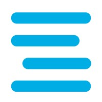

CinePedia
Aplicación web para gestión de películas bajo el patrón MVC usando Flask y Jinja2. Conecta una base de datos MySQL vía PyMySQL, con seguridad Flask-Bcrypt y Bootstrap 5.
Ver proyectoDesarrollador junior especializado en Python, Flask y bases de datos, con foco en crear experiencias web ordenadas, claras y bien estructuradas.
Tecnologías con las que trabajo

Estudio en el Liceo Comercial Vate Vicente Huidobro, en la especialidad de Programación de la Educación Media Técnico-Profesional. Me formé en Skillnest (ex Coding Dojo), donde completé las certificaciones de Fundamentos de la Web y Fullstack Python, y hoy curso ElevaTech para prepararme para el mercado laboral TI. Además sigo aprendiendo de forma independiente TypeScript, Node.js, React y React Native.
He participado activamente en diversos concursos y programas de innovación, aplicando mis conocimientos en entornos reales y competitivos:
Al egresar de la Educación Media Técnico-Profesional, los alumnos y las alumnas habrán desarrollado la capacidad de:

Bases del desarrollo web: maquetación, estilos, interactividad, control de versiones e introducción a bases de datos.
Desarrollo web completo con Python, bases de datos, AJAX y arquitectura MVC, con despliegue en Railway y AWS. Proyecto final: CinePedia.
Curso teórico para la vida laboral; no es de programación.
Preparación laboral y desarrollo de habilidades para insertarme en el mercado de las tecnologías de la información.
Estoy abierto a nuevas oportunidades y colaboraciones.
EscríbemeExcelente trabajo y dedicación en el desarrollo de este portafolio. Demuestra un gran dominio de las tecnologías y un enfoque limpio en el diseño UI/UX.